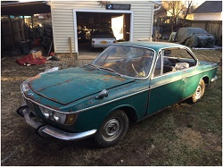
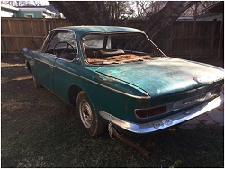
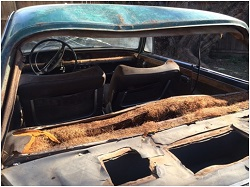
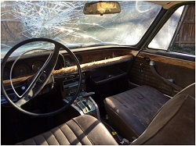
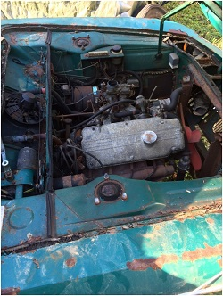

Introduction: Bringing Home a Broken Down, Busted Up, Rusted Out 2000 c
click images to enlarge
My friend Jason, a serious vintage bimmer-head, rescued this vehicle and others from a certain demise up north in the rust belt. What many would consider barn finds of sorts. I jumped at the chance and bought the Neue Klasse coupes. FINALLY! After 30 years of want, I finally received. I initially bought only one which is a white 68 2000cs. Jason really encouraged me to consider the second one. My ambitions were bigger than my good sense or knowledge when it came to the 68 model which is rusted beyond hope. So, I reluctatnly bought the second one, a 1966 Turf Green 2000 C.
"Turf" (not to be confused with Agave) is a BMW color from roughly 1964 - 68. Some BMW 1600s may have come in Turf, but I don't think the vanguard 2002s did nor the e9 coupes were Turf. It was a popular Neue Klasse/New Class (NK) sedan color. Turf is actually considered somewhat rare for the 2000 c/cs. Most seem to come in white, red, bristol and silver.
Moving a Dead & Rusted 3000 lb Brick

Jason flatbedded the car to me. First observation... wheels won't turn. He admitted they sort of "slid" the car onto the trailer. There we were looking at flat 40 year old year, dry rotted Michelin tires which didn't help. I inflate the tires all the while wincing at the thought of a tire and it's steel belts exploding in my face. Amazingly the tires hold. We sort of slid the car off the trailer using a winch, chains and my car to pull.
Now on terra firma I discover the bitch still won't move! It's those brakes. I remove the wheels and before me I can see the front pads, calipers and rotors have all "become one". The rear drums and shoes - same. All the brakes are fused with rust. First order of business, basically remove the brakes front and back. Blow torch, breaker bar, Goodson's wax/PB Blaster, 3 pronged gear puller. Presto, she rolls. After several hours of wresting mobility back from the uncaring consumption of time and the elements, I phyically push the old coupe into the backyard towards the garage, occassionally stopping to turn the steering wheel as needed until I get her where I want her.
A Moment to Relax and Admire my New Purchase

The last time (and only time) I enjoyed inspecting a Neue Klasse CS up close was in the summer of 1980. Roughly 35 years later and I stand back and admire my new purchase despite its desperate state of affairs. Some pragmatisim hit me and I realized I should do a first inspection for rust issues. Not a lot of bad rust I note. I could tell that the car must have sat out in the elements for years. Evidence of rust and rain intrusion seeping around bad rubber glass gaskets was very apparent. There is ample surface rust, but that's easy. I know how to spot rust in 1968-76 BMW 2002s, and the CS models I figure should not be that much different, right? (more on that later) . So... check shock towers (good), floor pans (rear passenger shot), frame rails (good), fender seems (good), major mounting points (good), rockers ( can't see - covered in fancy stainless steel 2 piece trim strips secured by rusted screws -- what's under there I wonder.... can't be too bad, right?).
Battered State

This car sat abandoned and was somewhat ravaged by vandals. The rear window and the passenger side glass busted out. The windshield had a good blow rendering it kaput. The most vexing aspect is that the shit balls who beat on the car put a serious dent on the rear roof line with what looks like a heavy steel bar at the rear window gasket area somewhat caving in the roof. There is another blow on the peak of the rear wing. Major causes for concern. I guess it could have been worse.
Beyond the vandalism, it looks as if this car lived a tough life when it came to minor fender benders, run away shopping carts, or the like. Dents here and there. All fixable. The driver's door has a serious massive dent which I don't think is fixable. You can also see where the driver's door stop broke free and swung open beyond its itended range damaging the front fender. I keep thinking "my dad is a TV repairman and has an awesome set of tools, I can fix it".
Sitting Behind the Wheel

I swung open the driver's door and climbed in behind the steering wheel. The interiors of these cars are so damn elegant. Sort of that German Bauhaus art deco-ish look going on. They are much more comfotable than any other BMW I've ever sat in too. Far more comfy that the 2002 "buck board" seats. That is what struck me the most and really put the hook in me 35 years prior. All that wood and chrome. Those bold designs with that long sloping door pull and map pocket on the door. Looking out through the windshield, despite its dirty and battered state, I note the early 60's dramatic front fender ridges rising up on either side juxtaposed by the hood curves. Giovanni Michelotti really laid it down with this car. This was the last bimmer that captured that type of expressive design. It is somewhat sad to see such an elegant lady in such a sad state of disrepair, neglect and abuse. The interior smelled of mold, mouse piss and rust. The wooden dash's laminate pealing off, the seats are dry rotted and chrome pitting. Nonetheless everything is intact and seemingly salvageable.
Raise that Hood to View Engine

The 2000 C has the familiar and trusted BMW M10 four banger designed by Baron Alex von Falkenhausen (1962). There it is in all its glory. The air cleaner is missing, as is the radiator. Still a welcoming sight to behold. The same engine and carb I had on my first car, a 1970 2002. Very simple, efficient, clean and strait forward all dominated by the tasteful aluminum valve cover with "Z U N D F O L G E" in raised cast lettering. The C (CA) has only a 1bbl Solex down draft carb and the engine only puts out about 100 hp (which was actually acceptable in 1966). It looks good in there. Most importantly, the fender lines that pair to the body under the hood are not seriously rusted. Great expectations.
{kind=link}
{kind=link}
{kind=link}
{kind=link}
{kind=link}